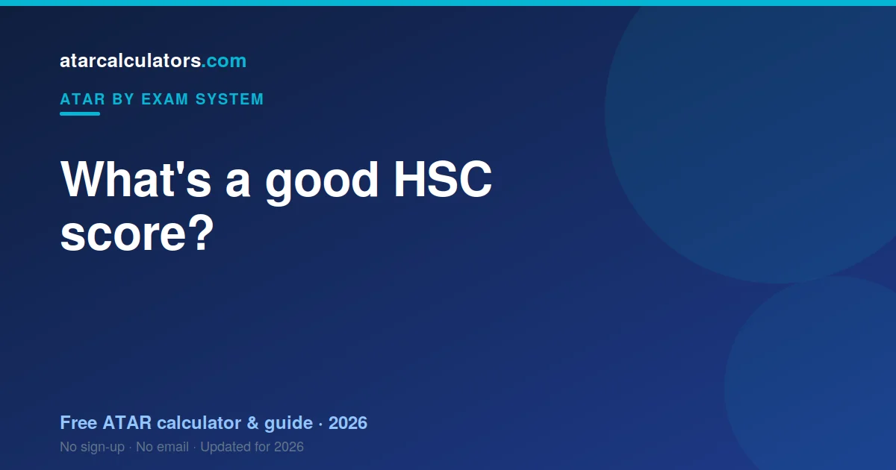

For the HSC, a Band 6 (90-100) is the top band, and a mark in the 80s or 90s is strong in most subjects. But a “good” HSC mark depends on the subject’s scaling. Because scaling differs by subject, the same raw mark can contribute very differently to your ATAR. For a 90+ ATAR, you generally need strong, well-scaling marks across several subjects.
Key takeaways
- A Band 6 is 90-100, the top HSC band in a subject.
- A mark in the 80s or 90s is strong in most subjects.
- A “good” mark depends on the subject’s scaling.
- The same raw mark can contribute very differently to your ATAR.
- For a 90+ ATAR, you need strong, well-scaling marks across several subjects.
- A high mark in a low-scaling subject still counts — ranking well matters.

What HSC bands mean
The HSC reports your mark in bands. Band 6 (90-100) is the top band, Band 5 is 80-89, Band 4 is 70-79, and so on. A Band 6 signals top performance in that subject.
Bands describe how you did in a single subject against the syllabus standards. They are not your ATAR, which is a separate statewide rank built from your scaled marks.
What counts as a good HSC mark?
As a broad guide, a mark in the 80s (Band 5) is strong, and a mark in the 90s (Band 6) is excellent. Most students aiming for a high ATAR are chasing Band 5s and 6s across their subjects.
But “good” is not the same in every subject, because of scaling. A mark that is strong in one subject may contribute more or less to your ATAR than the same mark in another.
Why scaling changes the answer
Scaling adjusts each subject so marks can be compared fairly. A subject with a strong cohort scales up; a broad one scales down. So a 90 in a high-scaling subject can be worth more towards your ATAR than a 90 in a broad-entry one.
This is why there is no single “good HSC mark”. What matters is your scaled mark, which depends on both your raw mark and how the subject scales. See HSC scaling explained.
What HSC result do you need for a 90+ ATAR?
A 90+ ATAR means finishing in the top 10% of your age group. To get there, you generally need strong marks — Band 5s and 6s — across several subjects, especially ones that scale reasonably well.
There is no single mark that guarantees it, because your ATAR depends on your best 10 units combined and on how everyone else did. Consistent strength across subjects matters more than topping any single one.
What is the average HSC mark?
By design, HSC marks in each subject centre around the middle bands, with most students in Bands 3 to 5. A mark in the 80s already puts you well above the middle in most subjects.
Remember that a solid HSC mark and a high ATAR are related but not identical. The ATAR is a rank built from scaled marks, so where your marks land in the bands is only part of the story.
Is a high mark in a low-scaling subject still good?
Yes. Scaling lowers a whole subject, but your position within it still counts. A high mark in a lower-scaling subject means you ranked near the top of that subject, which still produces a solid scaled mark.
So do not dismiss a subject just because it scales modestly. A strong mark in it can contribute more than a weak mark in a high-scaling subject you struggled with.
Match your marks to your goal
The most useful way to think about “good” is to work backwards from your goal. Find the course you want, look up its ATAR cutoff, and aim for the marks that get you there.
That turns a vague target into a clear one. A course needing an 85 ATAR asks for a different set of marks than one needing 95. See what a good ATAR is nationally.
Estimate your ATAR
Marks are easier to judge once you see the ATAR they produce. Our HSC ATAR calculator applies the latest official scaling to your marks and shows your estimated ATAR.
Try a few subjects and marks to see how scaling shapes the result. It makes “good” concrete, tied to the rank you are aiming for.
Good marks by subject type
What counts as a strong mark can feel different across subject types. In heavily scaled subjects like Extension maths or the sciences, even a mark in the high 70s or 80s can be very valuable once scaled. In broad-entry subjects, you generally need to rank near the top to get a strong scaled mark.
So do not judge a mark in isolation. A 78 in a strong-scaling subject and an 88 in a broad one can contribute similarly to your ATAR. What matters is the scaled mark, which blends your raw mark with how the subject scales.
Band 6 versus a high ATAR
A Band 6 and a high ATAR are related but not the same. A Band 6 is top performance in one subject. A high ATAR is a strong rank across your best 10 units combined. You can collect several Band 6s and still land an ATAR below what you hoped, if the rest of your marks or the scaling do not line up.
So chase strong marks across all your subjects, not just one showcase Band 6. Consistency across your best units is what lifts your ATAR, more than a single standout result.
Setting a realistic mark target
The most useful way to aim is to work backwards from your course. Find its ATAR cutoff, then use a calculator to see roughly what marks reach it. That turns a vague “do well” into a concrete set of targets for each subject.
Aim a little above the cutoff to give yourself a buffer, since cutoffs move year to year. A clear, realistic target for each subject is far more motivating than a fuzzy hope for a high ATAR.
A good HSC mark is personal
In the end, a “good” mark is the one that gets you where you want to go. A set of marks that clears your chosen course is a better outcome for you than higher marks aimed at nothing in particular.
So define good by your own goal, not by comparison with friends. Find the marks your course needs, and make those your measure. That is better for your planning and much better for your wellbeing.
Marks versus your rank
Keep the two ideas separate in your mind. Your HSC marks describe how you did in each subject. Your ATAR is a rank built from your scaled marks. Good marks usually lead to a good ATAR, but the ATAR also depends on scaling and on how everyone else did.
So aim for strong marks, and understand that they translate into a rank rather than a percentage. A calculator bridges the two, showing the ATAR your marks are likely to produce.
Common questions
What is a good HSC score?
A Band 6 (90-100) is the top band, and a mark in the 80s or 90s is strong in most subjects. But a “good” mark depends on the subject’s scaling, since the same raw mark can contribute differently to your ATAR.
What HSC result do I need for a 90+ ATAR?
A 90+ ATAR usually needs strong marks — Band 5s and 6s — across several subjects, especially well-scaling ones. There is no single guaranteed mark, because your ATAR combines your best 10 units and depends on how everyone else did.
What is the average HSC score?
HSC marks in each subject centre around the middle bands, with most students in Bands 3 to 5. A mark in the 80s already sits well above the middle in most subjects.
Is a high mark in a low-scaling subject still good?
Yes. Scaling lowers a whole subject, but your rank within it still counts. A high mark means you ranked near the top, which still produces a solid scaled mark towards your ATAR.